Opt in as you go
Ordinary windows stay ordinary until you choose to group them.
QindaQt · Free and open source · Wayland
Begin with a Windows-style taskbar, a BeOS corner bar, a NeXT-style dock, or eight other profiles. Then move panels, change their contents, choose a theme, and make your own arrangement. QindaQt also lets you reshape windows, route sound, and work in native apps.
Cyber Pengu and Ducke guide you through their actual desktop.
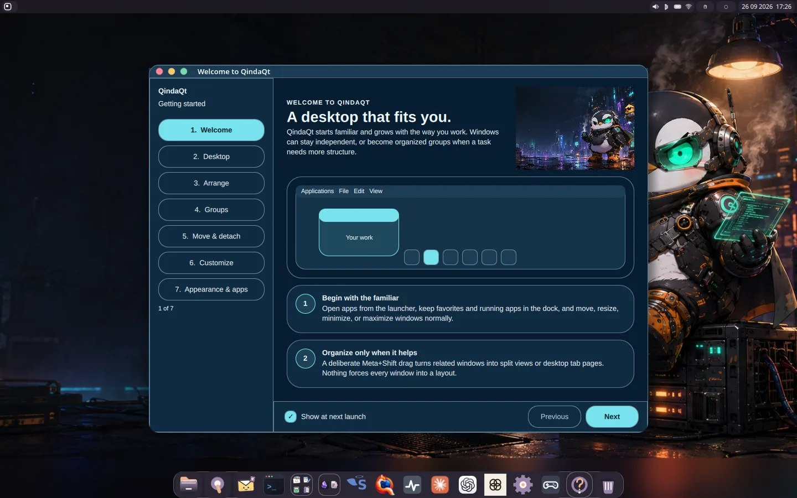
Captured in QindaQt
11Desktop profiles to start from
08Mixing buses you can route to
03Ways to hold windows: separate, split, tabs
04Office apps, one working project
The layout is yours to choose
Windows-style taskbars, BeOS-inspired corner controls, a NeXT-style workspace dock, and eight more. Switch the whole arrangement in Settings, then edit panels right where they live.
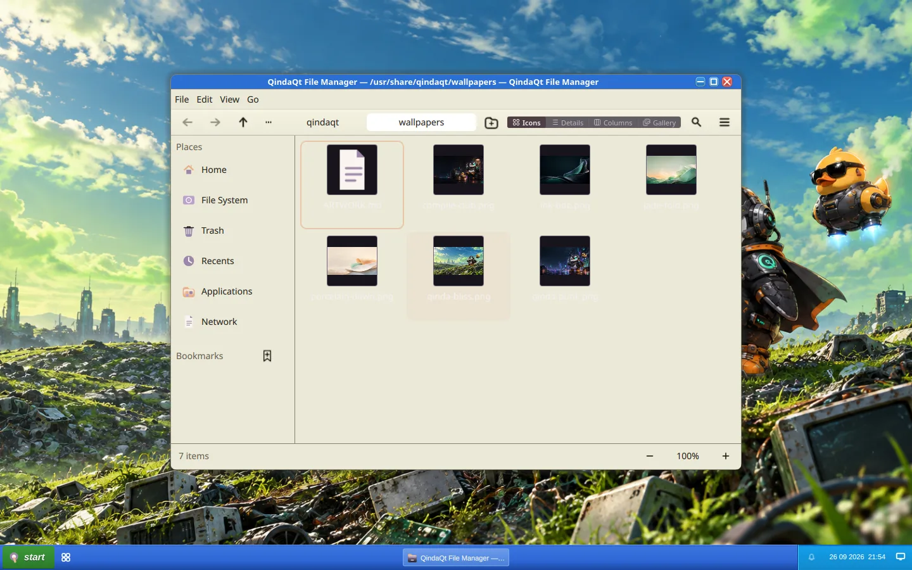
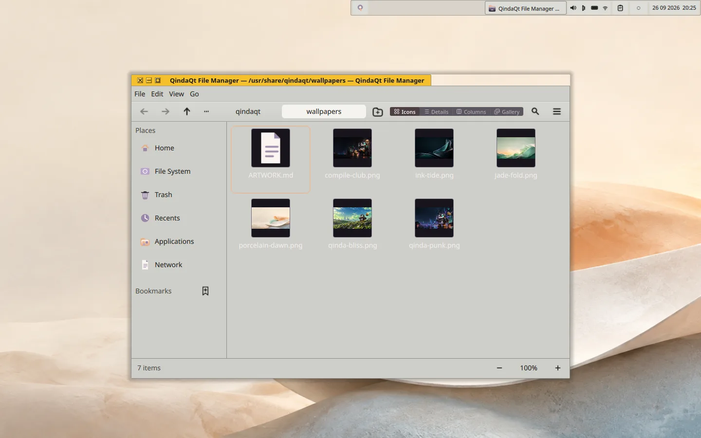
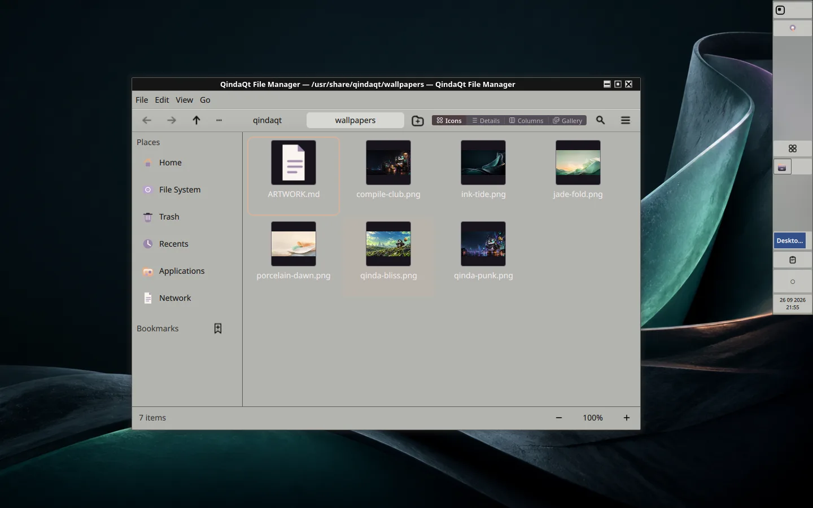
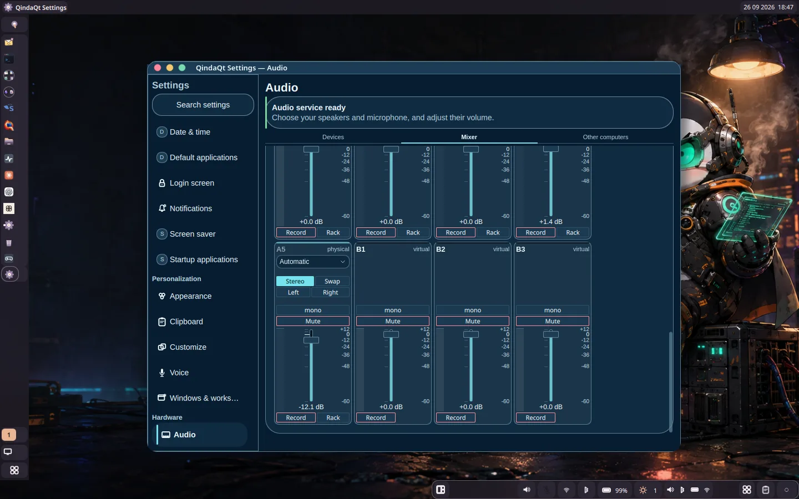
All eleven are starting points. Move, add, resize, and restyle panels in Settings; save a custom profile when the arrangement feels right.
CORNER BAR / COLOR PRESS
The clear space beside the short title tab belongs to the desktop beneath it. Pick a theme for the full color set, buttons, and corner shape. Fine tune them together in Appearance.
A real audio control room
QindaQt's Audio1 engine gives applications, physical inputs, virtual inputs, and outputs a common routing surface. Work with eight input strips, eight buses, per-send gain, live meters, processing racks, recording, and manual computer-to-computer stereo streams.
Explore the audio engine5 physical + 3 virtual inputs · A1–A5 physical buses · B1–B3 virtual buses
A different kind of window management
Keep every window independent. When a task grows, hold Meta + Shift and drag one window onto another. Drop in the middle for tabs or at an edge for a split. Move the resulting container as one.
TRY THE IDEA
Click through this illustrated interaction. QindaQt gives you a preview before a real drop, and you can pull a member back out whenever you want.
A shared frame holds two applications side by side. Drag the divider to give either one more space.
Ordinary windows stay ordinary until you choose to group them.
Mix tabs and recursive splits to fit the task in front of you.
Drag a member’s title strip out and it becomes independent again.
Color has a point of view
Choose a theme, wallpaper, and fonts in Appearance. Preview before you apply. Panels, controls, window frames, and native apps follow the same visual language.
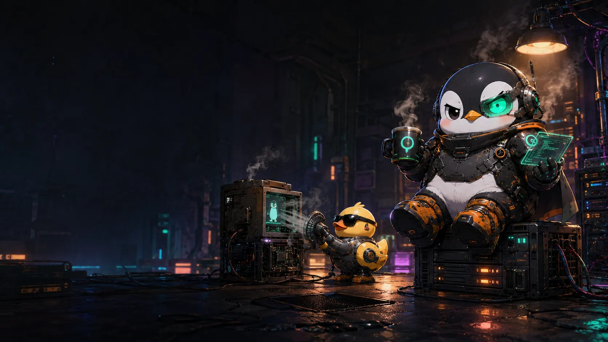
SIX BUNDLED WALLPAPERS
Click to change the scene. Pair it with Smoked Plum, Pearl, Velvet, High Contrast, Mist, Classic Blue, or the other shipped themes.
SAME LAYOUT · FOUR THEMES
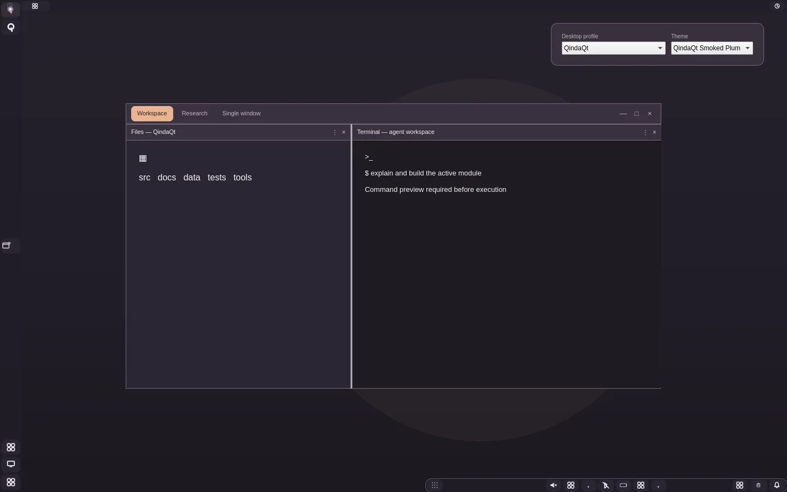
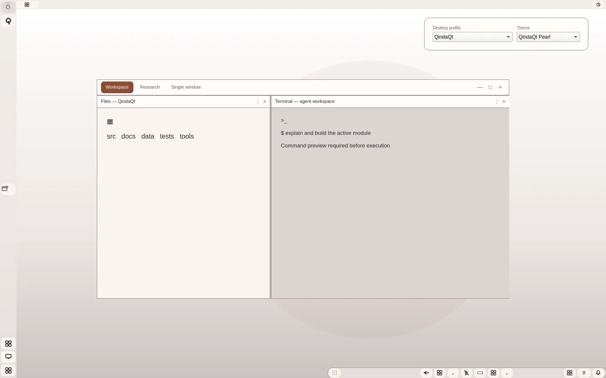
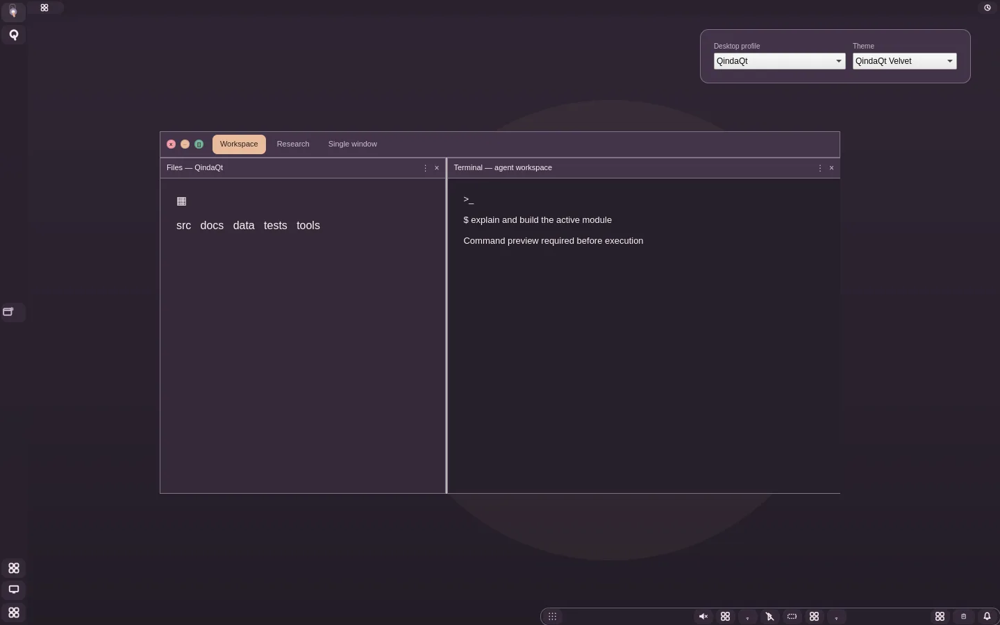
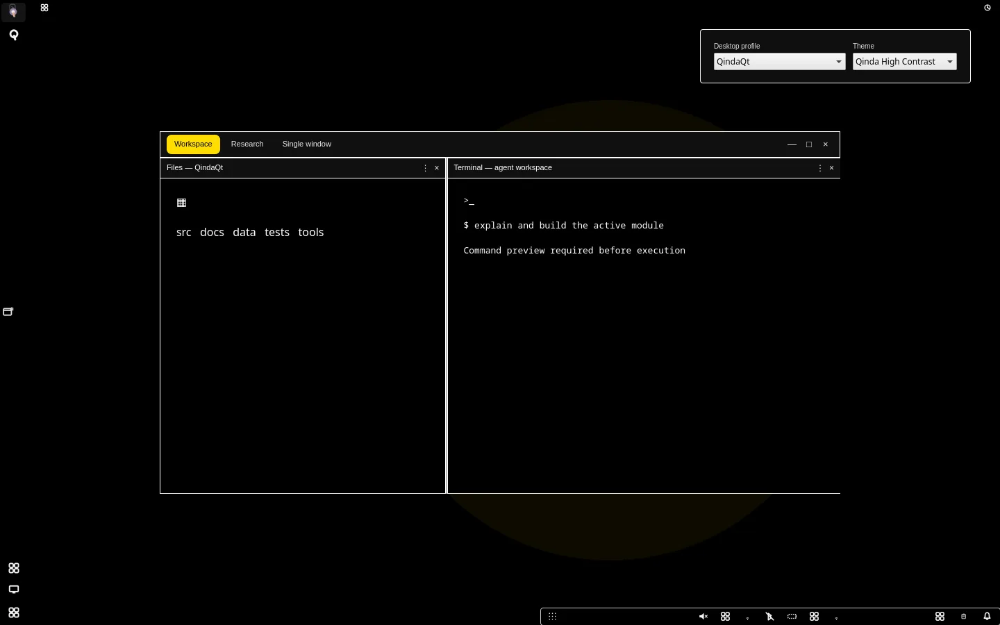
Made for the desktop they live on
Start with the Welcome guide, find what you need in File Manager, and tune the experience in Settings. Text Editor, Terminal, Viewer, QindaMPV, and System Monitor round out the desktop.
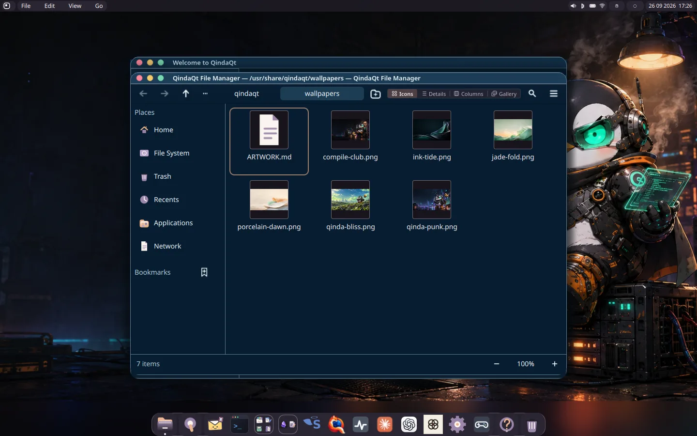
Your folders, desktop files, bookmarks, and applications in one native place.
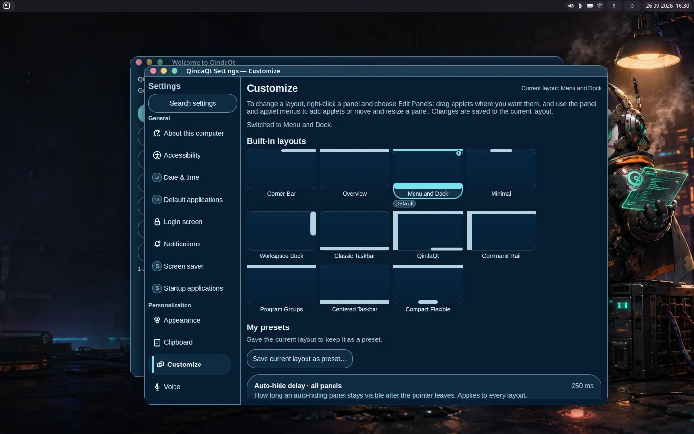
Appearance, layouts, displays, sound, network, power, and more.
Write plain text, work in a terminal, view images and PDFs, play media, and watch your system.
See the story in motion
Cyber Pengu and Ducke guide real QindaQt sessions. See a Meta+Shift drag make a window split, a layout switch in Settings, and a budget change recalculate in QindaOffice.
Real windows become a split; Settings changes the layout. Watch full size ↗
A document edit, recalculating workbook, chart, slides, and notebook. Watch full size ↗
Ready to look around?
QindaQt is free and open source, and it is still under active development. The source, handbook, Gentoo packaging, and current status are open for you to explore.